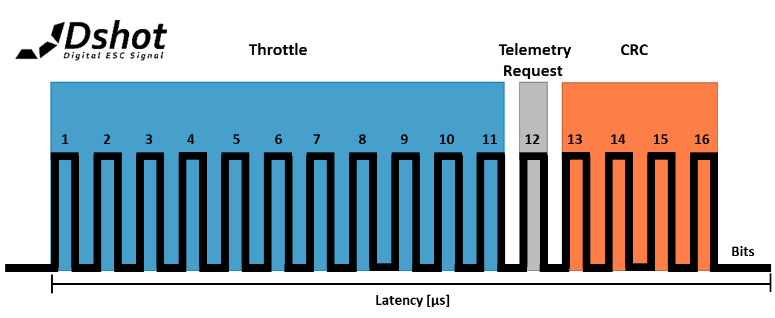

Dshot Usage Notes — Usage information about the protocol and the code module
Dshot (Digital shot) is a digital protocol for Flight-Controller(FC)-to-Electronic-Speed-Controller(ESC) communication used in unmanned aerial vehicle (UAV) applications. Dshot offers CRC checksum, a higher resolution than traditional protocols and does not require ESC calibration. This code module is designed for Dshot 150, Dshot 300, Dshot 600 and Dshot 1200, which have different transmission frequencies.
The transmission of one data packet contains 16 bits, where each bit is represented by one pulse. The signals for 0 and 1 are distinguished by their different high times, and the bit period is constant for each protocol mode.
The Dshot data packet consists of these pulses:
Throttle (11 Bit)
Telemetry request (1 Bit)
4-bit checksum (4 Bit)
Reset time (recommended 21 Bit)

The throttle contains 11-bit data sent from the flight controller to the ESC. It gives a resolution of 2048 values. The values 0-47 are reserved, 1-47 are for the telemetry settings, and 0 is for disarming.
The telemetry bit is set if the flight controller signals a telemetry update to the ESC. The throttle contains the appropriate values as stated above. The telemetry update uses a separate return channel.
The checksum comprises a 4-bit CRC value. The checksum is calculated according to the Dshot specification, using a polynomial according to the Dshot protocol specifications, and is calculated over the throttle and telemetry request bit.
The Dshot family consists of multiple protocol types, which all differ in bit rate.
| Mode | Bit Rate | Recommended FC Loop Frequency | Bit Period Time |
| Dshot 150 | 150 Kbit/s | 4.05 kHz | 6.67 µs |
| Dshot 300 | 300 Kbit/s | 8.09 kHz | 3.33 µs |
| Dshot 600 | 600 Kbit/s | 16.0 kHz | 1.67 µs |
| Dshot 1200 | 1200 Kbit/s | 32.0 kHz | 0.83 µs |
In Dshot, the length of the high time indicates if the transmitted bit is a 0 or a 1. The high times according to the Dshot modes are stated in the table below.
| Mode | One High Time (T1H) | Zero High Time (T0H) |
| Dshot 150 | 5.00 µs | 2.50 µs |
| Dshot 300 | 2.50 µs | 1.25 µs |
| Dshot 600 | 1.25 µs | 0.625 µs |
| Dshot 1200 | 0.625 µs | 0.313 µs |